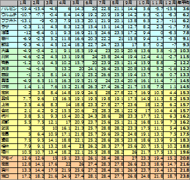
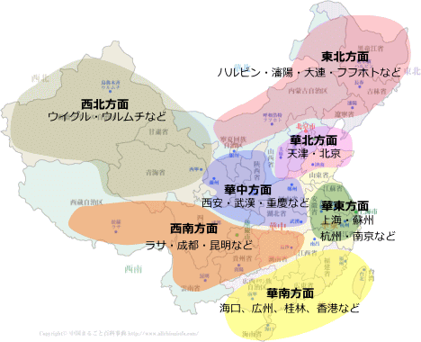

中国各地の気候と準備する服装
中国はご存知の通り、日本より遥かに広大で、北と南、西と東でも大きく気候が異なります。まずは目的地や経由地の気候と気温を把握して、最適な服装や準備をしましょう。
中国主要都市平均気温表 平均気温が低い（寒い）順

図をクリックすると拡大表示されます。

※各地域の場所は目安です。実際に気候は異なる場合もありますので、現地の情報や旅行社などにも確認してください。
東北方面 （ハルビン、瀋陽、大連、フフホトなど）
緯度は北海道とほぼ同じで、四季もはっきりしています。夏の時期は短いですが非常に過ごしやすく、避暑地としては最適です。冬の寒さは厳しく、厳寒期にはマイナス２０度近くまで下がります。旅行に行くなら、夏か秋がお勧めです。冬場行くのならば、スキー場へ行く以上の重装備を用意（厚手のセーター、オーバー、手袋など）してください。春先は季節風の影響で、乾燥した風が非常に強いので、あまり旅行には適しません。
華北方面 （北京、天津など）
華北方面は、日本の東北地方とほぼ同緯度ですが、夏と冬の気温差が大きく、日本より四季がはっきりしています。冬場は最低気温がマイナス１０度近くなる日もありますし、逆に夏場は最高気温が３５度近くになる時もあります。最も旅行に適しているのは８月末から１０月にかけてで、雨が少なく安定した晴天が続きます。秋は日中と夜間の温度差も大きくなりますので、１枚余分に長袖を用意するとよいかと思います。
西北方面 （ウイグル、ウルムチなど）
このあたりは四季があるものの、内陸の砂漠地帯になるため、１日の寒暖の差が非常に大きくなります。真夏でも日中は２５度くらいまで温度が上がりますが、夜になると１０度台まで気温が下がります。夏でも長袖やセーターなどを必ず準備しましょう。お勧めは春から秋にかけてです。冬場はかなり寒くなりますので、旅行にはあまり向きません。
華東方面 （上海、蘇州、杭州、南京など）
緯度的には九州と同じです。春（４～６月）と秋（９～１１月）に訪れるのが雨も少なく、最も適しています。冬場は大きく冷え込むこともなく、雪も滅多に降りません（２００８年は、例外的に大雪になりました）。夏の暑さは非常に厳しく、日中３５度以上になる日も多く、真夏は旅行に適しません。日本の東京や大阪など、本州中央部の装備で十分対応できます。
華中方面 （西安、武漢、重慶など）
ちょうど中国大陸の真ん中くらいにある地域で、南側ほど夏の暑さが厳しいです。特に武漢は中国でも有数の高温地帯で、夏の旅行はお勧めできません。北側にある西安になると、乾燥した天気が多いので、夏の暑さは南側ほどではありません。春は黄砂の影響をモロに受けるので、旅行としては秋が適しています。冬も気温さえ気にしなければ晴天が続き観光には適しています。
西南方面 （ラサ、成都、昆明など）
南側ほど、夏は暑くなり四季がはっきりしています。ラサ方面は高原性気候のため、夏は涼しく、冬も厳しくありません。訪れるならば春か秋が一番適しています。夏場でも日本の春くらいの格好をすればいいでしょう。成都など南側はかなり蒸し暑くなるので、日本の真夏の格好で十分です。
華南方面 （海口、広州、桂林、香港など）
緯度的には沖縄より南の熱帯なので、夏の暑さは厳しく、また湿度も高いため、夏の観光はあまりお勧めできません。また春先も雨が多く、不適切です。９～１１月の秋に訪れるのが最適です。沿岸部では冬の寒さの影響は少ないですが、桂林など内陸部では冬も寒くなります。長袖などは必ず用意しましょう。中国で唯一常夏と呼ばれる島「海南島」は香港よりもさらに南に位置し、島南部では熱帯地方に属しているため、年中海水浴も楽しめます。
中国旅行注意に戻す
{kind=link}